| 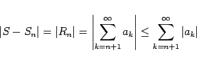 | (7.64) |
der Reihe 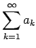 abzuschätzen. Dazu benutzt man als Majorante für 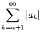 eine geometrische oder eine andere Reihe, die sich leicht summieren oder abschätzen läßt.
| Beispiel |
|
Abschätzung des Restes der Reihe 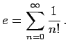 Für den Quotienten 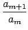 zweier aufeinanderfolgender Glieder dieser Reihe gilt mit 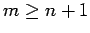: 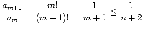 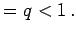 Damit kann der Reihenrest 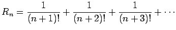 durch die geometrische Reihe (7.15) mit dem Quotienten 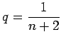 und dem Anfangsglied 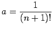 majorisiert werden, und es gilt: |
| 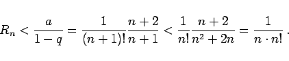 | (7.65) |
| 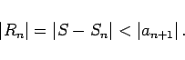 | (7.66) |